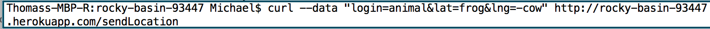
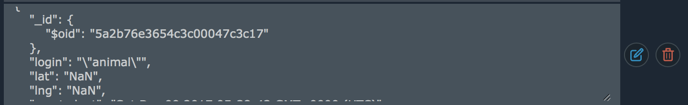
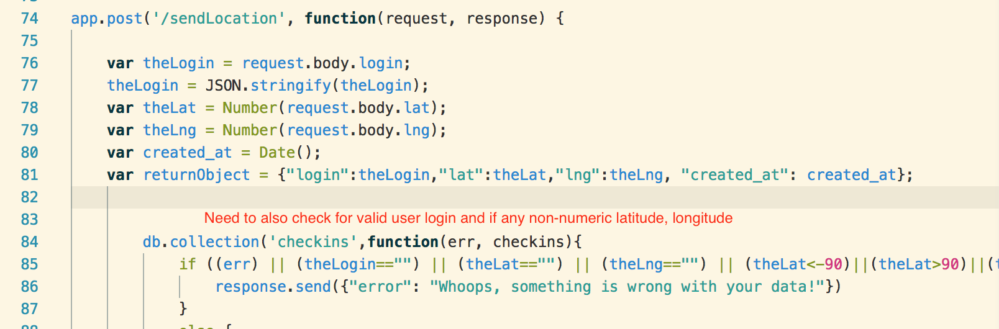
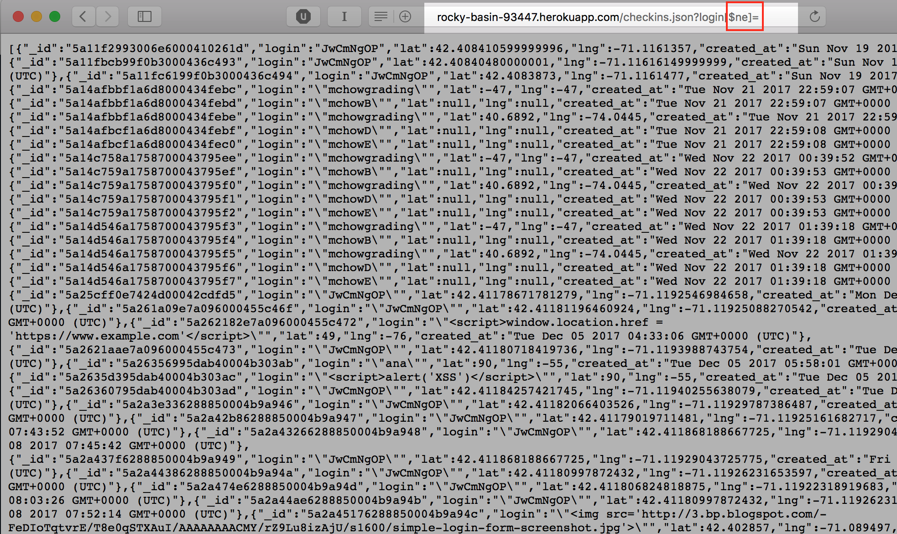
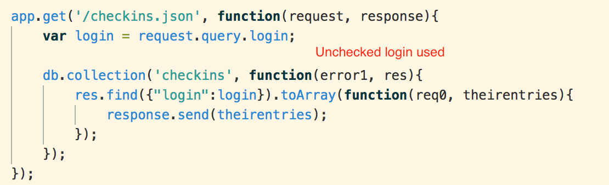
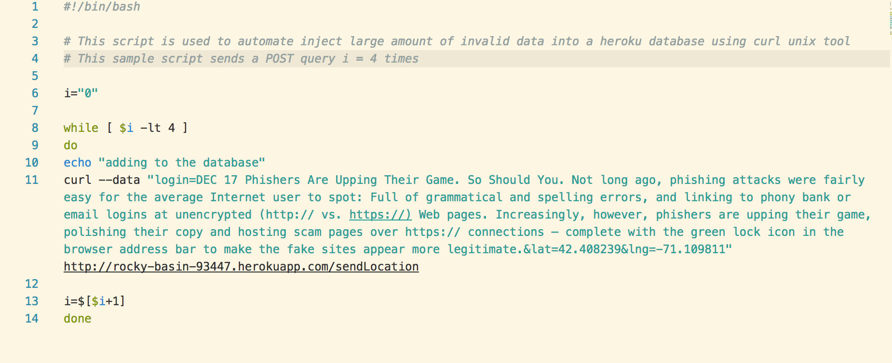
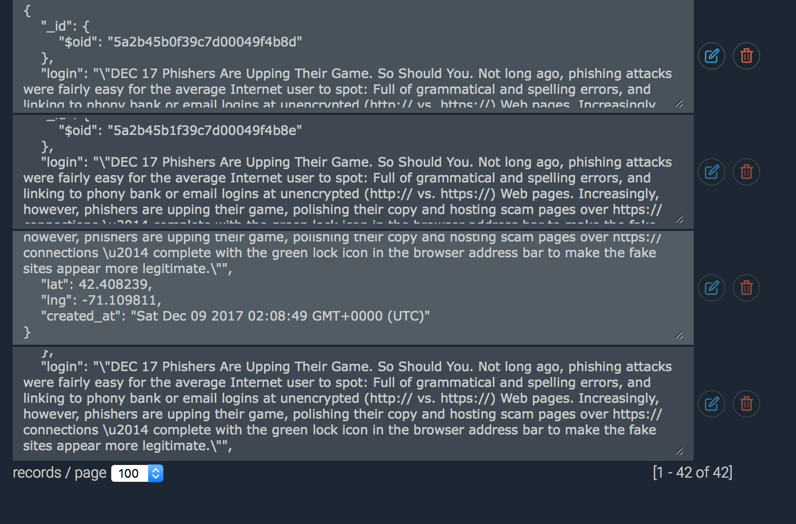

The objective of this project is to test and document security flaws found in a web application
developed by a colleague (Grace) as part of Assignment 2 (Client Side) and Assignment 3 (Server Side) for Comp-20 : Web Programming.
My goal is to carry out a basic first-run penetration test to discover security flaws in this particular
implementation and to document the test results.
The user's application (also known hereafter as "app") consists of the following:
Server Side (Application is hosted on Heroku PaaS Cloud Application Platform)
Server Application is written in Node/Express JS
Database backend is MongoDB
Client Application is written in HTML5/CSS and uses JavaScript for client side functionality
The application (HTML Page) is served locally from a client computer
Test system and Tools Used:
Browser details: Safari (updated to latest version)
Mac OS Terminal 2.7.3 on Mac OS X Sierra (64 bit) for running shell script and Unix Tool CURL (POST Request)
Documentation of results, snapshots as part of Project Report
Preliminary functionality test of application:
The first stage of testing included running my colleague's application and checking if the implemented
functionality is generally in line with the specification requirements of Assignment 2, 3 mentioned above. This is
important because Black Box testing is done assuming the core functionality of a working app and by targeting
common vulnerabilities related to the working app.
No major discrepancies found in app functionality. Client application (index.html) was launched locally from my computer.
All landmarks & user markers were displayed (this implied operational server linkup); InfoWindow popup for Maps
was functional. On the server side, /checkins.json and /sendLocation routes were also functional. Home Page
hosted by server was also functional. I used Unix Tool Curl to send POST request with valid and invalid data, and
confirmed that data is being logged in MongoDB by utilizing MongLab online tool.
This application was found to be vulnerable to a number of security flaws. The application works as expected
with valid user input that complies with the specifications; however, it can be easily compromised by erronous
or malicious user input which can deface or mutilate the Client Application Interface (API), and expose private data to theft.
No special tools are required to exploit the above vulnerabilities: command line interface (CLI) available on
every computer and common web browsers are sufficient to administer the exploit payloads.
A key takeaway is this:
The application checks for out-of-range values for Latitude and Longitude values, but obviously invalid
data is accepted into the database. This is not a major security issue but it affects the credibility of an app
and detracts from functionality when it displays obviously faulty information. As an example, with incorrect coordinate data entered manually
by using CURL within a Terminal Window, a user is placed in the middle of the ocean near Africa.
Furthermore, the database is currently modifiable by any unregistered user of this app. There is no
validation of supplied login information and potentially devious agents are given full latitude (pun intended)
to wreak havoc to the database.

CURL POST
Proof of Vulnerability

Invalid data
Fake location

Validity check
Resolution
The application program must check whether the queried parameter login, latitude, longitude is of correct type and length
before inserting into database.
isNaN('123') //false isNaN('Hello') //true
Furthermore, user login information should be checked against a whitelist, then simply reject
data from unauthorized logins.
Resolution
The application program must check and filter user input before inserting into database. Common escape characters could be used to negate the use of
Javascript code or modified HTML code. For example, str.match(/[\<\>]/g) would display string with those characters and this can be useful for filtering an XSS attempt.
Severe and adverse effect on functionality of the applicationPossible security threat by opening app to website redirection and phishing attempts
Problem Description & Test
According to owasp.org ,
Cross-Site Scripting (XSS) attacks occur when:
Data enters a Web application through an untrusted source, most frequently a web request.
The data is included in dynamic content that is sent to a web user without being validated for malicious content.
I was able to inject scripts and thereby deface the application windows, redirect the user to another website, display
popup warnings etc; this was done by injecting the particular script into the login/longitude/latitude fields
in the POST queries. By redirecting the user, I gained the ability to forward the user to innocuous looking
websites. Such websites could be expertly designed by an agent to use "social engineering" tricks or phishing to gain access to personal
information like user logins and passwords.
See Phishing [3] and Social Engineering [5] See Link
All private user data stored in database is exposed to the public
Problem Description & Test
The /checkins.json API is used to query the application for check-in information specific to a particular user.
The user's login is supplied as part of a GET request query string. But, the application code
does not check for a valid string and allows MongoDB comparison queries to get through unchecked.
For example, $ne selects the documents where the value of the field is not equal (i.e. !=) to the specified value.
This includes documents that do not contain the field. If I supplied an empty string for login, the [$ne] operator
returns the entire private database as a JSON object to the browser for viewing. This is a massive data breach
and can be exploited easily by a malicious agent who doesn't even need to know any valid user logins.
This is also considered a privacy issue as private user data is being revealed to the public.
Here is an example of one of the largest data breaches that happened to Yahoo! Inc (affected 500 Million users.)
See Link [4]
Infact, data breaches are an almost daily occurence on the web these days. E.g. Equifax data breach (145 Million people),
Uber data breach (57 Million Users), Ashley Madison Hack (20 Million Users and apparently many divorces).
Proof of Vulnerability

Illegal Query

Client Code
Resolution
The application program can check whether the queried parameter login is a JSON object of correct type (string)
and is of correct size (not empty or null).
Application vulnerable to unauthorized takedown/ DDOS attack
Severity
Moderate to Severe
Affects
The client API. Application functionality
Problem Description & Test
I used a bash script to inject a multiline junk input in the login-field of POST query multiple times.
This faulty data was accepted by the Mongo Database.
This is a type of database injection that can be used to carry out a DDOS attack. An arbitrary large amount of data can be
injected into a database millions of times, and the end-result is that the databasej
server/application can slow down or worse - be shutdown. As the free version of Heroku is used in this application which
restricts storage consumption, I was hesitant to actually carry out the test as this could result in
excess-use billing for the app's owner.

Bash Script
For a more pertinent example, a recent DDOS attack took control of many internet connected devices and used these swarm of bots
to take down a security researcher's website as payback.
See Link [1] [2]
Proof of Vulnerability

MongoLab
Resolution
The main solution here is to check first and reject invalid login before proceeding to inserting into
the database. Also, a field length restriction for string data input can be implemented, this will
ignore and prevent large amounts of non-sense data being inserted.
This application was found to have a number of vulnerabilities mainly related to unchecked acceptance of
3rd party user data. Some steps that can be taken are as follows: proper checking of valid user-ids (example keeping a whitelist of authorized logins),
checking data length and type for correct format, stripping special characters before storing in database. If you choose to proceed with fixing
and launching this application on the web, I would recommend hiring an experienced pen-tester (or me after I take
Mr. Ming's Security class at Tufts) for a detailed investigation that probes issues beyond user input validation.